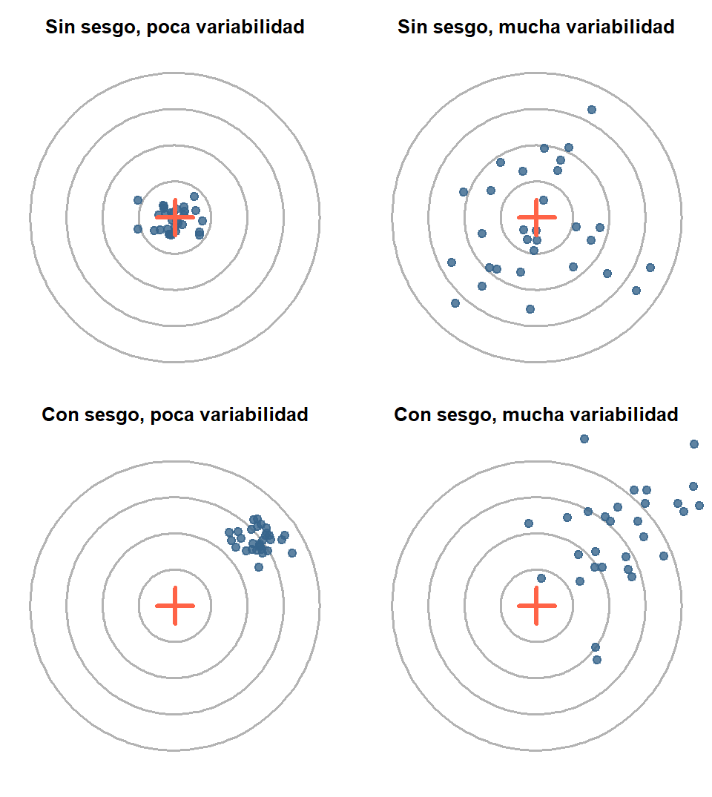
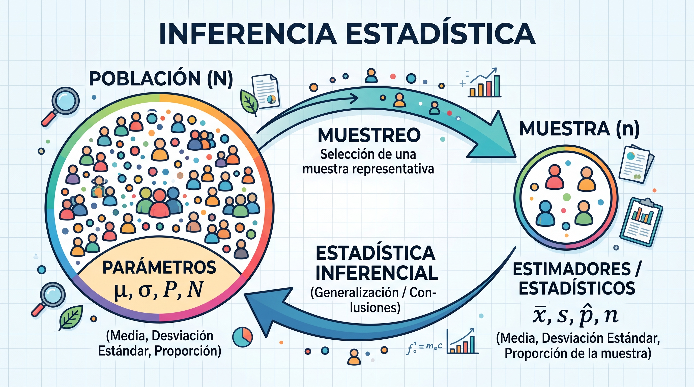
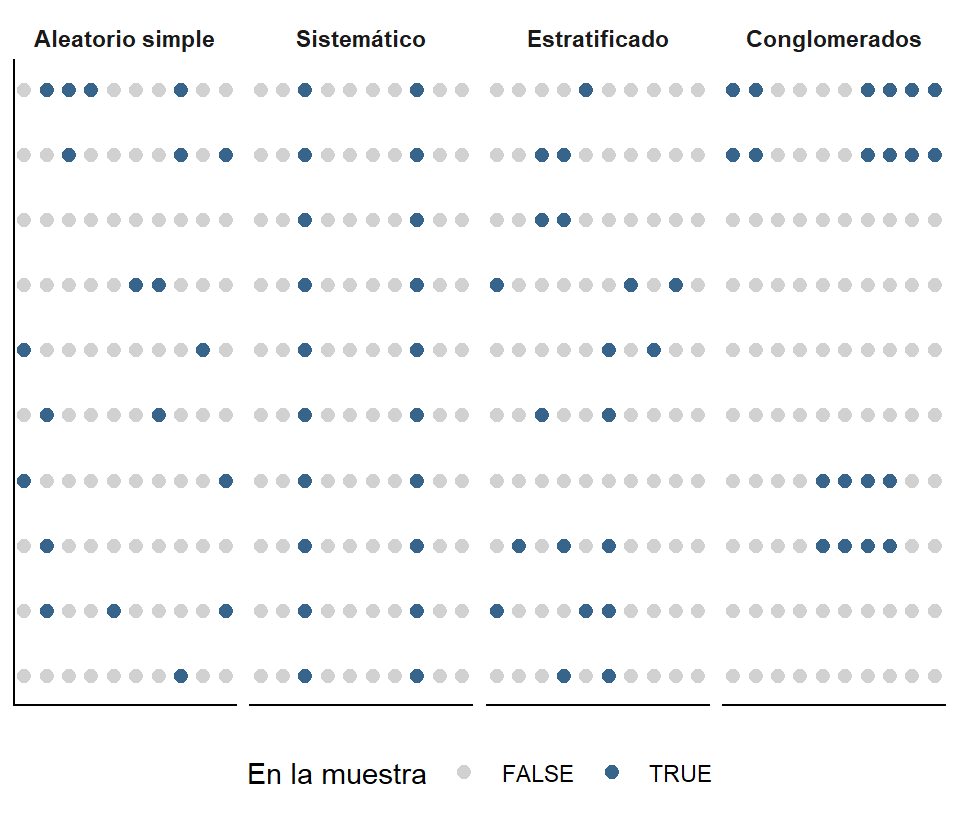
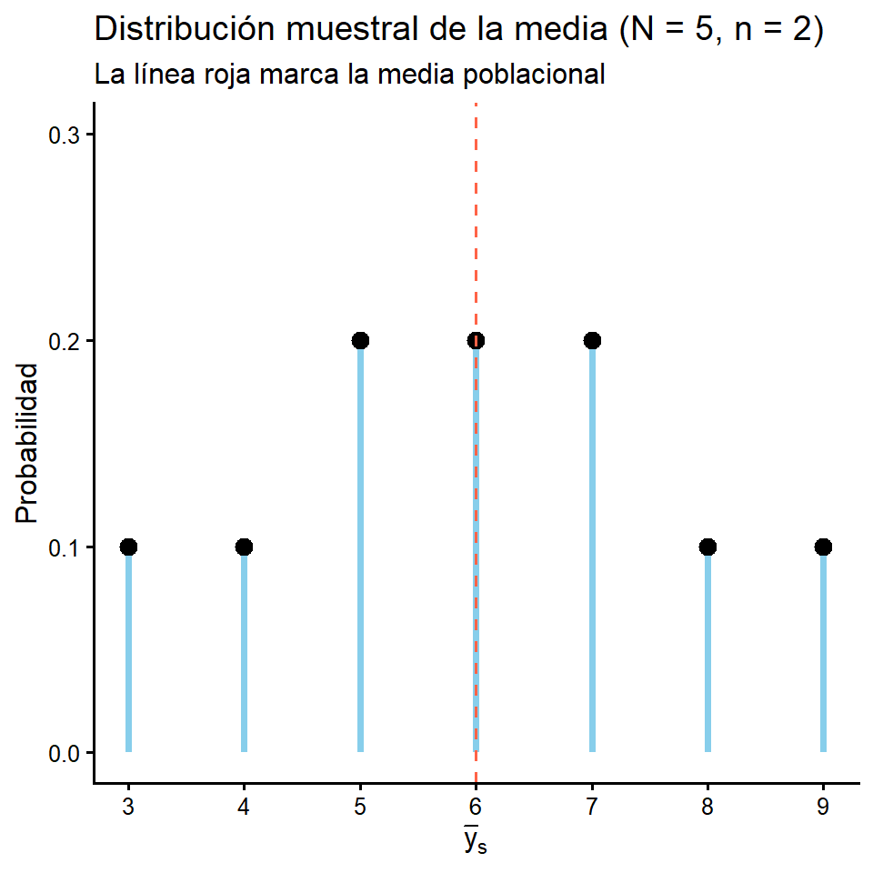
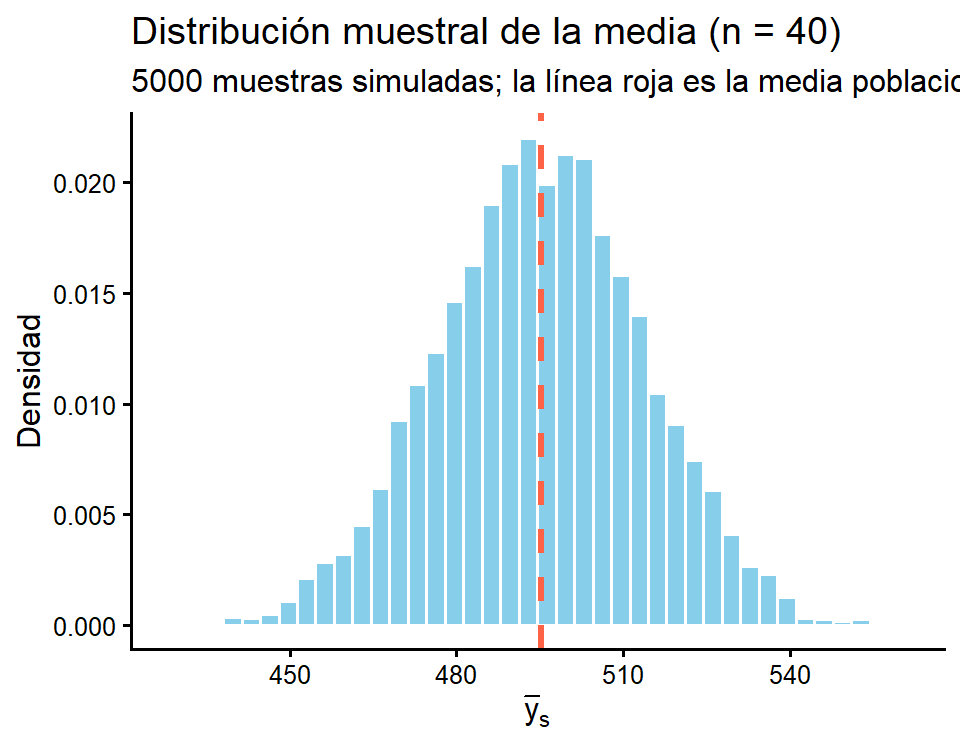

[XS-1130 Principios de Inferencia]

Estadística Inferencial
Censo
Se observan todas las unidades de la población.
Muestra
Se observa una parte de la población.
Nota
Estadística descriptiva vs inferencial. La descriptiva resume lo observado; la inferencial usa lo observado en la muestra para concluir sobre la población, acompañando la conclusión de una medida del error. Este tema es el punto de partida de la inferencia.
Establecer contacto con toda la población requiere mucho tiempo.
El costo de estudiar todos los elementos resulta prohibitivo.
Es imposible verificar físicamente todos los elementos.
Algunas pruebas son de naturaleza destructiva (probar la resistencia de un cable lo inutiliza).
Los resultados de la muestra son adecuados: bien diseñada, una muestra da respuestas suficientemente precisas para decidir.
Importante
La pregunta central del tema no es “¿cómo consigo una muestra?” sino:
¿Cómo debo seleccionar la muestra para poder cuantificar el error que cometo al usarla?
La respuesta es: Usando el azar de forma controlada.
Población de estudio: conjunto de todas las unidades sobre las que se desea concluir.
Unidad de estudio: el elemento del que interesa medir la característica.
Unidad informante: quien proporciona la información (puede no coincidir con la unidad de estudio).
Unidad de muestreo: el elemento que efectivamente se selecciona (por ejemplo, una unidad geográfica mínima).
Marco muestral: listado o material que permite identificar y ubicar a las unidades de muestreo.
Ejemplo integrador
Encuesta sobre rendimiento escolar en Costa Rica:
| Concepto | En este estudio |
|---|---|
| Población de estudio | Niños de 7 a 12 años del país |
| Unidad de estudio | El niño |
| Unidad informante | La madre, el padre o encargado |
| Unidad de muestreo | La vivienda (dentro de una UPM) |
| Marco muestral | Marco de áreas del INEC (UPM) |
Para una misma característica poblacional —por ejemplo el ingreso promedio— coexisten tres cantidades distintas:
Valor real: lo que se obtendría al recolectar la información de toda la población sin omisiones ni errores. Es inalcanzable en la práctica.
Valor poblacional: lo que se obtiene al censar la población, sujeto a errores de recolección. Es una aproximación al valor real.
Valor muestral (estimación puntual): lo que se obtiene de la muestra. Es una aproximación al valor poblacional y cambia según las unidades que hayan caído en la muestra.
\[\tiny \underbrace{\text{Ingreso promedio real}}_{\text{inalcanzable}} \;\longrightarrow\; \underbrace{\text{Ingreso promedio poblacional}}_{\text{censo}} \;\longrightarrow\; \underbrace{\text{Ingreso promedio muestral} = \text{₡}800\,000}_{\text{lo que reportamos}}\]
Sea la población
\[U = \{1, 2, \dots, k, \dots, N\}\]
y sea \(y_k\) el valor de la variable de interés en el indivuo \(k\). Definimos los parámetros:
\[\small \underbrace{T_y = \sum_{k=1}^{N} y_k}_{\text{Total}} \quad \, \underbrace{\bar{Y} = \frac{1}{N}\sum_{k=1}^{N} y_k}_{\text{Media Poblacional}} \quad \, \underbrace{S^2 = \frac{1}{N-1}\sum_{k=1}^{N}\left(y_k - \bar{Y}\right)^2}_{\text{Cuasivarianza Poblacional}} \quad \, \underbrace{\sigma^2 = \frac{1}{N}\sum_{k=1}^{N}\left(y_k - \bar{Y}\right)^2}_{\text{Varianza Poblacional}}\]
Importante
Estos valores son constantes desconocidas de la población.
La única fuente de aleatoriedad es cuáles unidades entran en la muestra. Sobre esa aleatoriedad se construye toda la teoría.
Usamos mayúsculas para parámetros (\(\bar{Y}\), \(S^2\)) y minúsculas para lo calculado en la muestra (\(\bar{y}\), \(s^2\)).
Definición
El error de muestreo es la diferencia entre el valor muestral y el valor poblacional, debida a haber seleccionado un conjunto particular de elementos:
\[\text{Error de muestreo} = \bar{y}_s - \bar{Y}\]
\[\text{Error de muestreo} = \text{Valor Muestral} - \text{Valor Poblacional}\]
¿Qué problema tiene esta definición?
Para conocerlo habría que hacer un censo… que es justamente lo que queríamos evitar.
Entonces, ¿cómo se calculan los errores de muestreo?
Usando el cálculo de probabilidades: si sabemos con qué probabilidad se pudo haber obtenido cada muestra posible, podemos describir el comportamiento de todos los errores posibles sin calcularlos uno a uno.
\[\tiny \text{ERROR DE ESTIMACIÓN} = \text{ERROR DE MUESTREO} + \text{ERRORES DE NO MUESTREO}\]
En términos de los tres valores de un parámetro:
\[\underbrace{\bar{y}_s - Y_{\text{real}}}_{\text{error de estimación}} = \underbrace{\left(\bar{y}_s - \bar{Y}\right)}_{\text{error de muestreo}} + \underbrace{\left(\bar{Y} - Y_{\text{real}}\right)}_{\text{errores de no muestreo}}\]
| Error de muestreo | Errores de no muestreo | |
|---|---|---|
| Origen | Observar solo una parte de la población | Marco, recolección, medición y procesamiento |
| ¿Ocurre en un censo? | No | Sí |
| ¿Disminuye al aumentar \(n\)? | Sí | No; suele aumentar |
| ¿Se puede cuantificar? | Sí, con probabilidades | Difícilmente; se previene con el diseño y la supervisión |
Nota
¿Por qué los errores de no muestreo suelen aumentar con \(n\)? Porque una operación más grande requiere más entrevistadores, más cuestionarios que digitar y menos tiempo de supervisión por unidad.
1. Errores de cobertura
Provienen del marco muestral: blancos, duplicados o elementos faltantes.
Ej.: una encuesta telefónica que solo marca líneas fijas deja fuera a los hogares que únicamente tienen celular.
2. Errores de no respuesta
Ej.: un hogar responde toda la encuesta excepto la pregunta sobre sus ingresos.
3. Errores de medición
El valor registrado difiere del valor verdadero.
4. Errores de procesamiento
Ocurren después de recolectar los datos: digitación, codificación o unión de bases de datos.
Ej.: la ocupación de una persona se codifica en una categoría equivocada.
Un error puede ser de dos tipos:
Aleatorio: varía en dirección de una unidad a otra y tiende a compensarse al promediar. Aumenta la variabilidad, pero no desplaza la estimación.
Sistemático (sesgo): va siempre en la misma dirección y no se compensa, por grande que sea la muestra. Desplaza la estimación.
Formalmente, el sesgo de un estimador es:
\[\operatorname{Sesgo}(\hat{\theta}) = E(\hat{\theta}) - \theta\]

Errores no aleatorios (sesgos)
Sesgo de medición: la información se registra con un error que va siempre en la misma dirección.
Sesgo de no respuesta: quienes no responden difieren sistemáticamente de quienes sí responden, en la variable de interés.
Sesgo de selección: las unidades no tienen la probabilidad de selección que supone el diseño. Ocurre sobre todo en muestras no probabilísticas, pero también en diseños probabilísticos cuyo marco no cubre a toda la población.
| Situación | Tipo de error | ¿Aleatorio o sesgo? | Efecto en la estimación |
|---|---|---|---|
| Al pesar a las personas, quien anota redondea al kilogramo más cercano. | Medición | Aleatorio | Casi no cambia el promedio; agrega algo de variabilidad |
| En una encuesta de satisfacción, el entrevistador trabaja en la misma institución que se evalúa. | Medición (entrevistador) | Sesgo | Sobreestima la satisfacción |
| Una encuesta sobre ausentismo escolar se aplica en el aula, y el 15% de los estudiantes seleccionados no llegó ese día. | No respuesta | Sesgo | Subestima el ausentismo: faltan justamente los ausentes |
| El marco de viviendas tiene diez años y no incluye los residenciales construidos después. | Cobertura | Sesgo, si las viviendas nuevas son distintas | Depende de en qué difieren las viviendas excluidas |
| Al digitar los cuestionarios se cometen errores sin ningún patrón. | Procesamiento | Aleatorio | Agrega variabilidad |
| Una encuesta sobre el uso del transporte público se aplica en las paradas de autobús. | Selección | Sesgo | Sobreestima el uso del transporte público |
Importante
Un error de muestreo siempre es aleatorio y se controla aumentando \(n\). Un sesgo no se corrige aumentando \(n\): se previene con un buen marco, un buen cuestionario, entrevistadores capacitados y un diseño probabilístico.
Sea \(\hat{\theta}\) un estimador de un parámetro \(\theta\).
Advertencia
Un estimador es una función de los datos de mi muestra (promedio muestral) que intenta estimar un parámetro poblacional (promedio poblacional).
Su calidad se mide con el error cuadrático medio:
\[ECM(\hat{\theta}) = \underbrace{\operatorname{Var}(\hat{\theta})}_{\text{error aleatorio}} + \underbrace{\left[ \operatorname{Sesgo}(\hat{\theta}) \right]^2}_{\text{sesgo}^2}\]
Importante
Consecuencia práctica: aumentar \(n\) reduce la varianza, pero no toca el sesgo. Por eso una muestra enorme mal seleccionada es peor que una muestra pequeña bien seleccionada.
Literary Digest (1936): 2.4 millones de respuestas y una predicción electoral equivocada, frente a las 50 000 de Gallup, correctamente seleccionadas.
Los problemas en el marco muestral son posibles razones de hacer una selección incorrecta de la muestra.
Blancos: están en el listado del marco pero no existen en el campo.
Duplicados: el elemento aparece más de una vez en el listado, pero en el campo es uno solo.
Incompletos (o elementos faltantes): el marco no cubre a toda la población.
Importante
Estos problemas alteran las probabilidades de selección y por lo tanto rompen la teoría:
El marco muestral define, en la práctica, cuál es realmente la población sobre la que se puede concluir.
Definición: Muestreo Probabilístico
Un procedimiento de selección es probabilístico si:
Se puede especificar el conjunto de todas las muestras posibles.
Cada muestra posible \(s\) tiene una probabilidad conocida \(p(s)\) de ser seleccionada.
Toda unidad \(k\) de la población tiene probabilidad positiva y conocida de ser seleccionada.
La selección se ejecuta con un mecanismo aleatorio, no según el criterio del investigador.
Al conjunto de muestras posibles junto con sus probabilidades se le llama diseño muestral, y cumple las mismas dos condiciones de cualquier función de probabilidad que ya estudiamos:
\[p(s) \ge 0 \qquad \text{y} \qquad \sum_{\text{todas las muestras}} p(s) = 1\]
Definición
La probabilidad de inclusión de la unidad \(k\), denotada \(\pi_k\), es la probabilidad de que esa unidad forme parte de la muestra:
\[\pi_k = P(k \in s) = \sum_{\text{muestras que contienen a } k} p(s)\]
Es la cantidad que hace posible toda la inferencia. Su inverso
\[w_k = \frac{1}{\pi_k}\]
se llama peso de muestreo y se interpreta como “cuántas unidades de la población representa la unidad \(k\)“. Si \(\pi_k = 1/100\), cada persona entrevistada representa a 100 personas.
Nota
En un diseño equiprobable todas las unidades tienen la misma \(\pi_k\). Si además el tamaño de muestra es fijo e igual a \(n\), entonces necesariamente \(\pi_k = n/N\) para toda unidad.
Sea \(U = \{1,2,3,4,5\}\) una población de 5 fincas y considere el diseño que selecciona muestras de tamaño 2 con igual probabilidad.
El número de muestras posibles es \(\binom{5}{2} = \dfrac{5!}{2!\,3!} = 10\), cada una con \(p(s) = \dfrac{1}{10}\):
\[\{1,2\}\; \{1,3\}\; \{1,4\}\; \{1,5\}\; \{2,3\}\; \{2,4\}\; \{2,5\}\; \{3,4\}\; \{3,5\}\; \{4,5\}\]
Verificación de que es un diseño válido: \(\sum_s p(s) = \sum_{s=1}^{10} \frac{1}{10} = 1 \;\checkmark\)
Probabilidad de inclusión de la finca 1: aparece en 4 de las 10 muestras, entonces
\[\pi_1 = \tfrac{1}{10}+\tfrac{1}{10}+\tfrac{1}{10}+\tfrac{1}{10} = \tfrac{4}{10} = 0.4 = \frac{n}{N} = \frac{2}{5} \;\checkmark\]
Como \(\frac{2}{5}= \frac{1}{2.5}\), podemos decir que cada finca muestreada representa a 2.5 fincas de la población.
Probabilístico
Tipos: aleatorio simple, sistemático, estratificado, conglomerados.
No Probabilístico
Tipos: de conveniencia, voluntarios, intencional o de juicio experto, por cuotas.
Precaución
El muestreo no probabilístico no está prohibido: es legítimo en estudios exploratorios, cualitativos o cuando no existe marco. Lo que no es legítimo es reportar márgenes de error a partir de él.
Diseños básicos
Muestreo aleatorio simple (MAS): se seleccionan directamente las unidades, todas con igual probabilidad.
Muestreo sistemático: se elige un arranque aleatorio y luego cada \(k\)-ésima unidad de la lista.
Muestreo estratificado: se divide la población en grupos y se muestrea dentro de cada uno.
Muestreo por conglomerados: se divide la población en grupos y se seleccionan grupos completos.
Nota
Extensiones: muestreo multietápico (conglomerados y luego submuestreo) y muestreo complejo, que combina varios de los anteriores. La ENAHO del INEC, por ejemplo, es estratificada, por conglomerados y bietápica.

En los cuatro casos \(n = 20\) de \(N = 100\), o sea \(\pi_k = 0.2\) para toda unidad. Lo que cambia no es cuántas unidades se observan, sino cuáles combinaciones son posibles, y eso modifica la precisión.
Antes de estudiar cada diseño, necesitamos entender por qué podemos calcular el error de muestreo sin hacer un censo.
La razón es que, una vez fijado el diseño:
La media muestral \(\bar{y}_s\) es una variable aleatoria: toma un valor distinto según la muestra que salga, y cada uno de esos valores tiene una probabilidad conocida.
Y de una variable aleatoria ya sabemos calcular todo:
\[f_{\bar{y}}(\cdot) \qquad F_{\bar{y}}(\cdot) \qquad E(\bar{y}) \qquad \operatorname{Var}(\bar{y})\]
Nota
A la función de probabilidad de un estimador se le llama distribución muestral del estimador.
Sea \(U = \{1,2,3,4,5\}\) fincas de arroz con cierto nivel de producción (en toneladas):
Los valores de producción de cada finca son:
\[y_1 = 2, \quad y_2 = 4, \quad y_3 = 6, \quad y_4 = 8, \quad y_5 = 10\]
Parámetros poblacionales:
\[\bar{Y} = \frac{2+4+6+8+10}{5} = 6 \qquad S^2 = \frac{16+4+0+4+16}{5-1} = \frac{40}{4} = 10\]
donde \(S^2 = \sum_{i=1}^N \frac{(y_i-\bar{Y})^2}{N-1}\) “conocida como cuasivarianza probacional”.
Con \(n = 2\) hay 10 muestras posibles, cada una con probabilidad \(1/10\):
| Muestra | \(\{1,2\}\) | \(\{1,3\}\) | \(\{1,4\}\) | \(\{1,5\}\) | \(\{2,3\}\) | \(\{2,4\}\) | \(\{2,5\}\) | \(\{3,4\}\) | \(\{3,5\}\) | \(\{4,5\}\) |
|---|---|---|---|---|---|---|---|---|---|---|
| valores | 2,4 | 2,6 | 2,8 | 2,10 | 4,6 | 4,8 | 4,10 | 6,8 | 6,10 | 8,10 |
| \(\bar{y}_s\) | 3 | 4 | 5 | 6 | 5 | 6 | 7 | 7 | 8 | 9 |
Agrupando los valores repetidos obtenemos la función de probabilidad del estimador (promedio muestral), exactamente como en el Tema II:
\[\small f_{\bar{y}}(t) = \begin{cases} \frac{1}{10}, & t = 3 \\ \frac{1}{10}, & t = 4 \\ \frac{2}{10}, & t = 5 \\ \frac{2}{10}, & t = 6 \\ \frac{2}{10}, & t = 7 \\ \frac{1}{10}, & t = 8 \\ \frac{1}{10}, & t = 9 \\ 0, & \text{en otro caso} \end{cases}\]

Aplicando las definiciones del Tema II:
\[E(\bar{y}_s) = \sum_t t \cdot f_{\bar{y}}(t) = 3\tfrac{1}{10} + 4\tfrac{1}{10} + 5\tfrac{2}{10} + 6\tfrac{2}{10} + 7\tfrac{2}{10} + 8\tfrac{1}{10} + 9\tfrac{1}{10} = \frac{60}{10} = 6\]
\[\Large \boxed{E(\bar{y}_s) = 6 = \bar{Y}}\]
El estimador es insesgado: en promedio, sobre todas las muestras posibles, acierta.
Y usando el corolario \(\operatorname{Var}(X) = E(X^2)-[E(X)]^2\):
\[E(\bar{y}_s^2) = 9\tfrac{1}{10}+16\tfrac{1}{10}+25\tfrac{2}{10}+36\tfrac{2}{10}+49\tfrac{2}{10}+64\tfrac{1}{10}+81\tfrac{1}{10} = \frac{390}{10}=39\]
\[\operatorname{Var}(\bar{y}_s) = 39 - 6^2 = 3\]
Para el muestreo aleatorio simple sin reemplazo se cumple, siempre:
\[E(\bar{y}_s) = \bar{Y} \qquad \operatorname{Var}(\bar{y}_s) = \frac{S^2}{n}\left(1 - \frac{n}{N}\right) \, \text{ó} \, \operatorname{Var}(\bar{y}_s) = \frac{\sigma^2}{n}\left(\frac{N-n}{N-1}\right) \]
donde:
\(S^2 = \frac{1}{N-1}\sum_{k=1}^{N}\left(y_k-\bar{Y}\right)^2\) es usualmente llamada la cuasivarianza poblacional.
\(\sigma^2 = \frac{1}{N}\sum_{k=1}^{N}\left(y_k-\bar{Y}\right)^2\) es usualmente llamada varianza poblacional.
Comprobación con nuestro ejemplo (\(S^2 = 10\), \(n=2\), \(N=5\)):
\[\operatorname{Var}(\bar{y}_s) = \frac{10}{2}\left(1-\frac{2}{5}\right) = 5 \times 0.6 = 3 \;\]
\[ \operatorname{Var}(\bar{y}_s) = \frac{S^2}{n}\underbrace{\left(1 - \frac{n}{N}\right)}_{\substack{\text{factor de}\\ \text{corrección}}} \quad \, \text{ó} \, \quad \operatorname{Var}(\bar{y}_s) = \frac{\sigma^2}{n}\underbrace{\left(\frac{N-n}{N-1}\right)}_{\substack{\text{factor de}\\ \text{corrección}}} \]
A los términos \(\left(1 - \dfrac{n}{N}\right) \, \text{ó} \, \dfrac{N-n}{N-1}\) se les llama factor de corrección por población finita (fpc).
Advertencia
La forma exacta del factor depende de cuál varianza poblacional se utilice. En otros textos, y en el tema de estimación, lo verá escrito como \(\dfrac{N-n}{N-1}\). No es un factor distinto: es el mismo, escrito para otra definición de la varianza.
\[ \operatorname{Var}(\bar{y}_s) = \frac{S^2}{n}\underbrace{\left(1 - \frac{n}{N}\right)}_{\substack{\text{factor de}\\ \text{corrección}}} \quad \, \text{ó} \, \quad \operatorname{Var}(\bar{y}_s) = \frac{\sigma^2}{n}\underbrace{\left(\frac{N-n}{N-1}\right)}_{\substack{\text{factor de}\\ \text{corrección}}} \]
Al término \(f = n/N\) se le llama fracción de muestreo.
¿Qué nos dice el fpc?
Si \(n = N\) (censo): \(1 - f = 0\) y la varianza es cero. No hay error de muestreo.
Si \(N\) es muy grande respecto a \(n\): \(f \approx 0\) y queda \(\operatorname{Var}(\bar{y}) \approx S^2/n\).
Lo que determina la precisión es \(n\), no la fracción \(f\). Una muestra de 1000 personas es casi igual de precisa en Costa Rica que en China. Es el error de intuición más común sobre muestreo.
En el ejemplo de las fincas: \(\;S^2 = \frac{40}{4} = 10\;\) y \(\;\sigma^2 = \frac{40}{5} = 8\).
\[\small \underbrace{\frac{10}{2}\left(1-\frac{2}{5}\right) = 5 \times 0.6 = 3}_{\text{con } S^2} \qquad\qquad \underbrace{\frac{8}{2}\cdot\frac{5-2}{5-1} = 4 \times 0.75 = 3}_{\text{con } \sigma^2}\]
con_S2 con_sigma2
3 3 Importante
Lo que no se puede hacer es mezclar: cada varianza va con su factor. Por ejemplo, usar \(S^2\) con \(\frac{N-n}{N-1}\) da \(\frac{10}{2}\cdot\frac{3}{4} = 3.75 \neq 3\).
Cuando se trabaja con el error estándar (la raíz de la varianza), el factor aparece con raíz: \(\sqrt{1-\frac{n}{N}}\) o \(\sqrt{\frac{N-n}{N-1}}\), según la varianza que se use.
En la práctica \(S^2\) y \(\sigma^2\) son desconocidas: solo tenemos los datos de la muestra. Se estiman con la varianza muestral
\[s^2 = \frac{1}{n-1}\sum_{k \in s}\left(y_k - \bar{y}_s\right)^2\]
Como \(s^2\) estima a \(S^2\), pero en la práctica (a nivel introductorio) se utiliza como factor para la varianza muestral \(\frac{N-n}{N-1}\):
\[\widehat{\operatorname{Var}}(\bar{y}_s) = \frac{s^2}{n}\left(\frac{N-n}{N-1}\right) \qquad \qquad ee(\bar{y}_s) = \sqrt{\frac{s^2}{n}\left(\frac{N-n}{N-1}\right)}\]
Nota
En muchos textos introductorios, se usa esta versión. Aunque lo correcto es usar el otro factor de corrección\((1-\frac{n}{N})\). La diferencia entre ambas es despreciable salvo en poblaciones muy pequeñas.
[,1] [,2] [,3] [,4] [,5] [,6] [,7] [,8] [,9] [,10]
[1,] 1 1 1 1 2 2 2 3 3 4
[2,] 2 3 4 5 3 4 5 4 5 5 media_poblacional esperanza_estimador
6 6 var_por_definicion var_por_formula
3 3 Nota
var(y) en R divide entre \(N-1\), que es justamente la definición de \(S^2\) que usamos.
Cuando la población es grande no podemos enumerar, pero sí simular muchas muestras:
media_poblacional promedio_simulado
495.2625 495.0926 var_simulada var_teorica
341.5456 327.7715 
\(\small \text{El estimador se concentra alrededor del parámetro (insesgamiento) y su dispersión es el error de muestreo.}\)
Una comunidad rural está formada por \(N = 5\) hogares. El número de personas que habitan en cada hogar es:
\[y_1 = 1, \quad y_2 = 2, \quad y_3 = 2, \quad y_4 = 4, \quad y_5 = 6\]
Se selecciona una muestra aleatoria simple sin reemplazo de \(n = 2\) hogares.
combn().Un taller tiene \(N = 4\) empleados, con los siguientes años de experiencia:
\[y_1 = 1, \quad y_2 = 4, \quad y_3 = 7, \quad y_4 = 10\]
Marque con una equis la opción correcta.
En el muestreo de poblaciones finitas, la fuente de aleatoriedad es:
En una encuesta sobre el esquema de vacunación de niños menores de 5 años, la persona entrevistada es la madre o el encargado. En este estudio, la unidad informante es:
Sobre el error de muestreo, es correcto afirmar que:
Un marco muestral incluye 50 viviendas que fueron demolidas hace dos años. Este problema se denomina:
En un diseño equiprobable con \(n = 200\) y \(N = 5000\), el peso de muestreo de cada unidad es:
¿Cuál de los siguientes procedimientos no es probabilístico?
Si la fracción de muestreo es \(n/N = 1\), entonces \(\operatorname{Var}(\bar{y}_s)\) vale:
Se toman dos muestras aleatorias simples de 1000 personas, una en Costa Rica y otra en China, en poblaciones con la misma variabilidad. Respecto a su precisión:
En una encuesta con sesgo de selección se duplica el tamaño de muestra. Entonces:
En un diseño equiprobable de tamaño fijo \(n\), la suma de todas las probabilidades de inclusión es igual a:
Indique si cada afirmación es falsa o verdadera y justifique su respuesta en una o dos líneas.
Para cada estudio identifique la población de estudio, la unidad de estudio, la unidad informante, la unidad de muestreo y el marco muestral.
Clasifique cada situación como error de muestreo o error de no muestreo. Si se trata de un sesgo, indique de cuál tipo.
Clasifique cada procedimiento como probabilístico o no probabilístico y, si es probabilístico, indique el tipo de diseño.